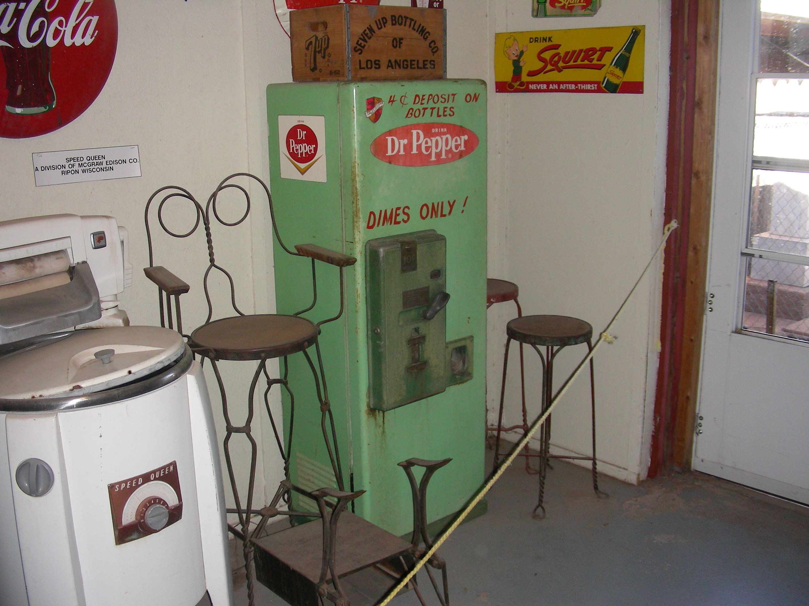
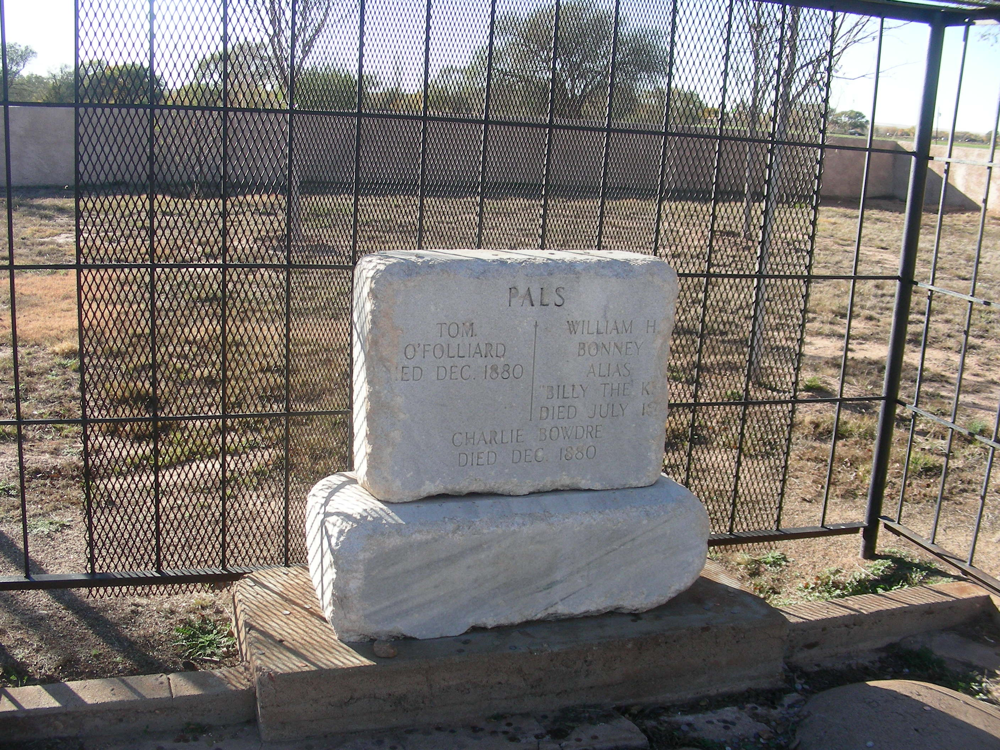
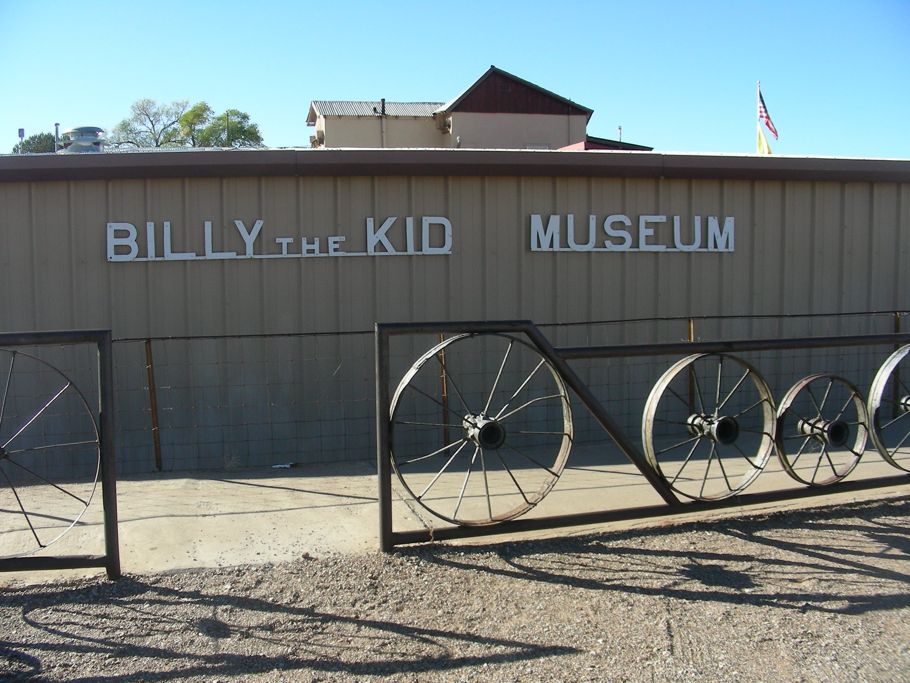
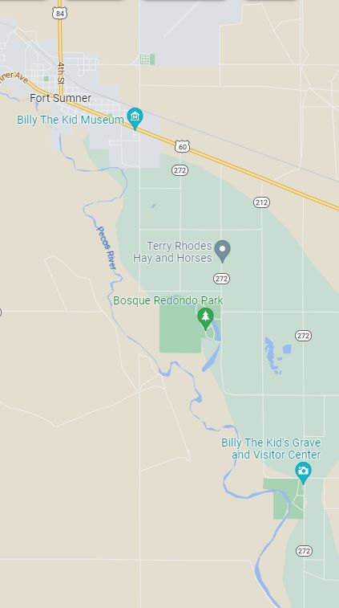

Day 19 Thursday Nov 10 302 miles
Albuquerque, NM to Clovis, NM
Pacos National Park -old Adobe town
Billy the Kid Museum and Grave
Stops Off Route 66 And Interstate 40
This was a day that we basically traveled off the beaten path of Route 66, between Albuquerque, New Mexico and Amarillo, Texas. There were a couple of stops we bypassed, and figured this would be a good time to check them out. These stops were a few miles off of the Route 66 path, but sounded interesting. The yellow line on the map above shows the route we took.
We started from Albuquerque and took Interstate 25 up to a stop we missed going to California. We fully intended to stop on our first trip, but by the time we got there it was closed. The Pecos National Historical Park is very interesting, once again, with a lot of history. Check it out if you think you’d be interested.
Billy The Kid
On our initial trip to LA we were going to stop at the Billy The Kid Museum in Fort Sumner, New Mexico. While visiting the Route66 Museum (the one with cool cars and Loretta Lynn Route 66 Guitar), in Tucumcari, New Mexico, we mentioned to the Museum guide that we were heading to the museum. We thought that it was just off of Route 66. He informed us that it was actually over 40 miles off of our route. We decided to bypass it and maybe hit it on the way home. While heading down route 84 we saw signs for the Museum, and decided to go for it. We’re glad we did.
Billy The Kid is one of the great legends of the wild west, and this museum does a great job celebrating his legacy. Its location is on the ground with the cemetery he is supposedly buried in. There has been some controversy, whether or not he was actually killed; and maybe lived out his life in Hico, Texas. Check out the websites and you be the judge.
Whatever your theory is on The Kid, the Museum is EXCELLENT! It’s a large museum, with lots of cool exhibits. They have a great Gift Shop with a lot of different items. We bought some cool Bill The Kid coasters for our friend Leonard (he collects them). The graveyard is pretty cool with his grave and tombstone. Definetly, a must stop!
N    ote: The Billy The Kid Museum And Grave site is actually south of Fort Sumner, New Mexico. It’s kind of out in the middle of nowhere, but don’t worry, it’s there and worth the trip.
Onward To Clovis, New Mexico
From Fort Sumner we decided to stay on route 60 to get to Amarillo, Texas, rather than heading up north to get to Interstate 40. We needed gas and were confident that we could find a gas station along the way; but we were wrong. We were driving down this rural road not seeing much of anything, let alone a gas station. We were getting a little nervous. It wouldn’t be any fun running out of gas in the middle of nowhere.
We went through a couple of small towns with no luck. We saw signs for Clovis, and decided we would have to do whatever we had to when we got to Clovis, to get some gas. But Clovis turned out to be a good size city, looking not much different than our suburban Crystal Lake, Illinois. (I checked it out, and both cities have a population around 40,000). Plenty of gas stations, restaurants and even a Walmart Super Center (just like Crystal Lake).
We needed to do some laundry, so we checked into the Econo Lodge right next door to a large, good looking laundromat. We did our laundry, and then drove up north into town. We bought some things at the Walmart, and had dinner at the Rib Crib, which was excellent BBQ. (Have you noticed? We like BBQ). Then back to the room and good night.

Advice On Lodging
Our room at the Econo Lodge was excellent. Nice size room with a King size bed that was comfortable. The bathroom actually had a hot tub type bath tub. I bring this up, because this was one of the least expensive rooms we stayed in. We originally were looking for more upscale hotels, which, of course, are more expensive. But what we learned on this trip, was that no matter where you stay the basic rooms are all similar. There really is no reason to pay a lot of money for a room to sleep in. What’s more important is the location. Our room in Clovis was perfect. It was on the main highway, close to anything you might require. I totally recommend this Econo Lodge in Clovis and urge you not to be deterred by cheaper lodging.
{kind=link}